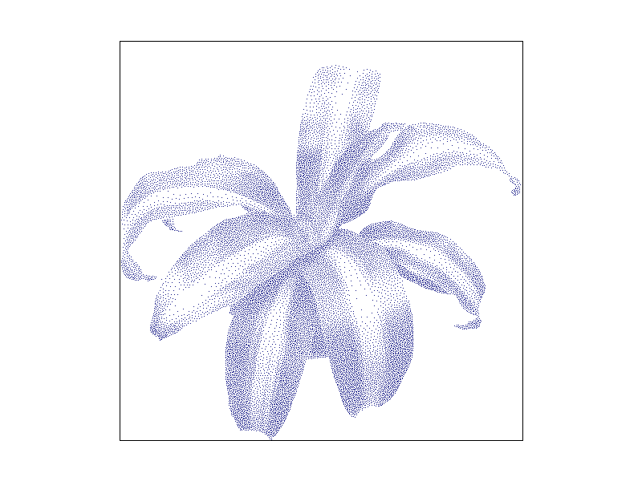
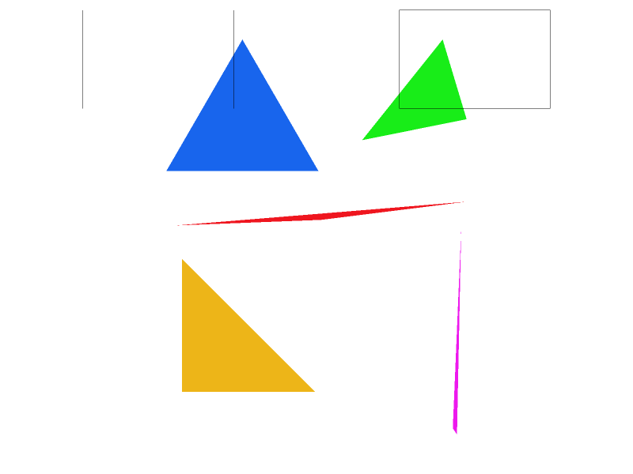
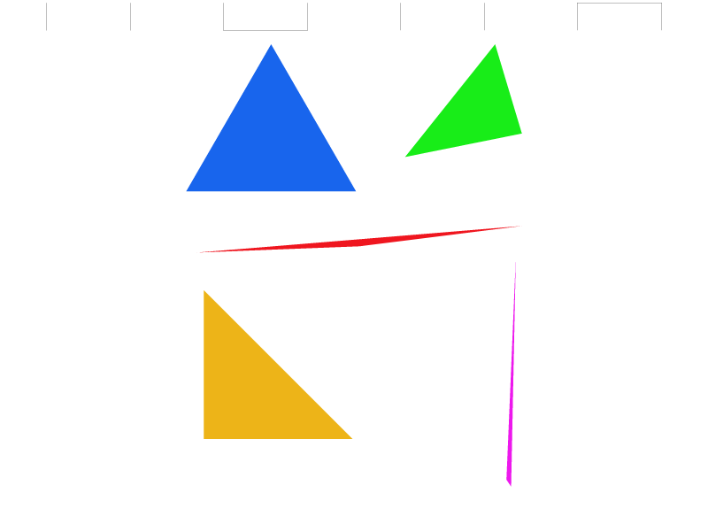
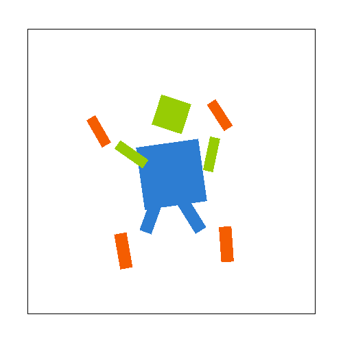
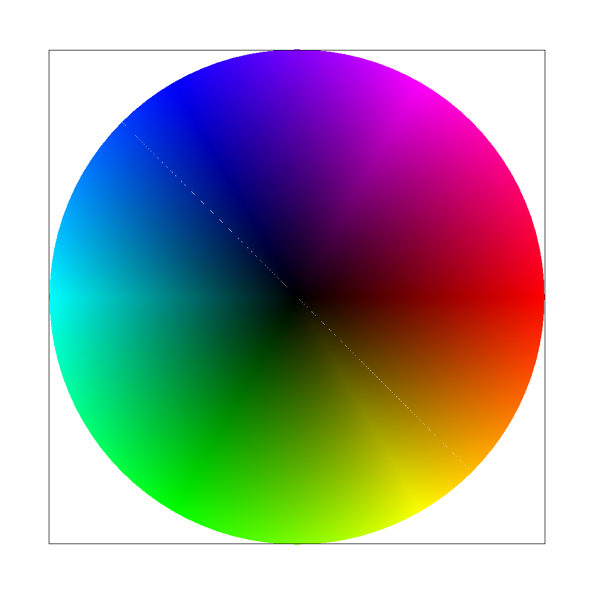
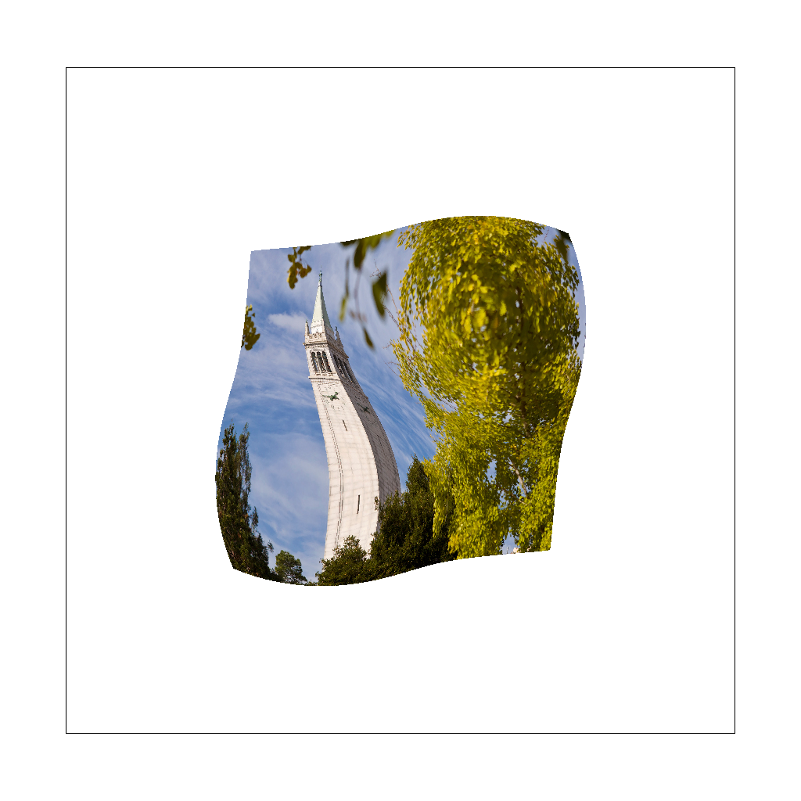
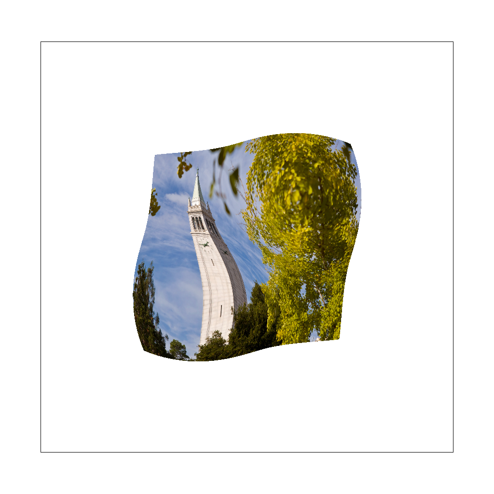
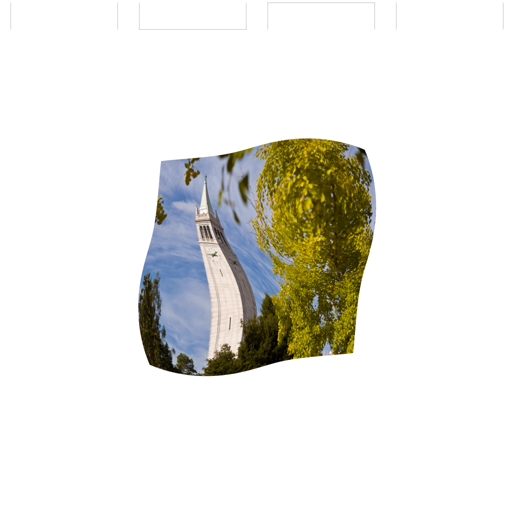
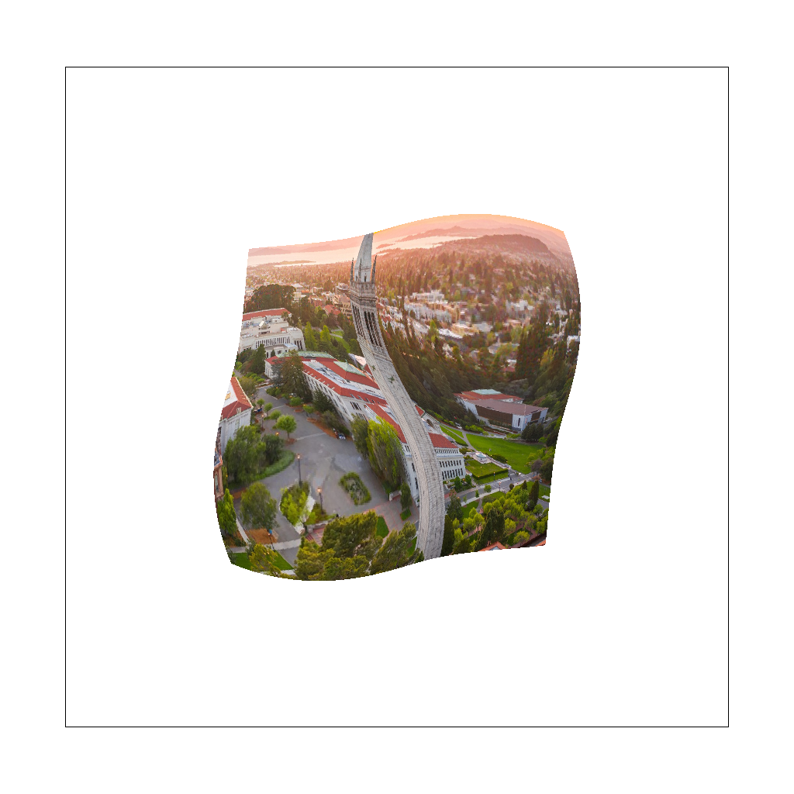

CS184/284A Fall 2026 Homework 1 Write-Up
Link to webpage: (TODO) cs184.eecs.berkeley.edu/fa26
Link to GitHub repository: github.com/cal-cs184-student/hw1-yuxiangliu

Overview
In this homework, I built a small software rasterizer that can convert SVG primitives into pixels. I started with single-color triangle rasterization using bounding boxes and edge tests, then extended the pipeline with supersampling so each pixel can average multiple sub-samples for smoother edges. I also implemented 2D transformations with homogeneous-coordinate matrices, which made it possible to compose translations, rotations, and scales across nested SVG groups.
The later tasks focused on interpolation and texture filtering. I used barycentric coordinates to interpolate colors and UV coordinates across triangles, then implemented nearest and bilinear texture sampling. Finally, I added mipmap level sampling by estimating how quickly UV coordinates change across neighboring screen pixels, using that estimate to choose an appropriate texture resolution. The most interesting part for me was seeing how all of these ideas connect: rasterization decides which samples are covered, barycentric coordinates decide what data belongs at each sample, and filtering decides how to turn discrete texture data into smooth images.
Task 1: Drawing Single-Color Triangles
Walk through how you rasterize triangles in your own words.
To rasterize a triangle with vertices \(P_0=(x_0,y_0)\), \(P_1=(x_1,y_1)\), and \(P_2=(x_2,y_2)\), I first compute the triangle's axis-aligned bounding box: the smallest and largest \(x\) and \(y\) values among the three vertices. I take the floor of the minimums and the ceiling of the maximums to get integer pixel bounds, and I clamp those bounds to the image so I never index outside the sample buffer. This restricts the work to only the pixels that could possibly be covered by the triangle, rather than scanning the entire screen.
I then loop over every pixel \((x,y)\) inside that bounding box and test whether the pixel is inside the triangle by sampling at the pixel center \((x+0.5,\; y+0.5)\). The inside test uses the three edge (half-plane) functions. For each directed edge \(P_a \to P_b\), I evaluate the 2D cross product of the edge vector with the vector from \(P_a\) to the sample point \(P\):
\[ L(P) = (x_b - x_a)(P_y - y_a) - (y_b - y_a)(P_x - x_a) \]The sign of \(L\) tells me which side of the edge the point lies on. A point is inside the triangle when it is on the same side of all three edges. Because the vertices may be given in either clockwise or counter-clockwise winding order, "same side" means the three edge values are either all non-negative or all non-positive:
\[ (L_0 \geq 0 \wedge L_1 \geq 0 \wedge L_2 \geq 0) \;\vee\; (L_0 \leq 0 \wedge L_1 \leq 0 \wedge L_2 \leq 0) \]Testing against \(\geq 0\)/\(\leq 0\) (rather than strict inequalities) means points that land exactly on an edge are treated as covered. When the pixel center passes the test, I fill that pixel with the triangle's color by writing into the sample buffer.
Explain how your algorithm is no worse than one that checks each sample within the bounding box of the triangle.
My algorithm is exactly a bounding-box algorithm: I iterate over every pixel inside the triangle's axis-aligned bounding box and perform a single constant-time inside test at each one. I never inspect any pixel outside the bounding box, so I do no more work than the reference "check every sample in the bounding box" approach. Each inside test is three edge-function evaluations plus a sign comparison — a fixed amount of arithmetic independent of triangle size — so the total cost is proportional to the number of pixels in the bounding box, \(O(w_{\text{bb}} \cdot h_{\text{bb}})\), which matches the baseline. It is therefore no worse than checking each sample within the bounding box.
Screenshot of basic/test4.svg.
Below is basic/test4.svg rendered with the default viewing parameters at sample rate 1, with the
pixel inspector (toggled with the Z key) centered on an interesting region. The screenshot was
saved with the S hotkey. Notice the "jaggies" (staircase aliasing) along the edges of the thin
triangles — this is a direct consequence of taking a single sample per pixel, and is what Task 2's
supersampling addresses.

basic/test4.svg, sample rate 1, with the pixel inspector showing aliasing along triangle edges.Task 2: Antialiasing by Supersampling
Walk through your supersampling algorithm and data structures.
Supersampling reduces aliasing by taking more than one coverage sample per pixel and averaging the results, so that a pixel straddling a triangle edge receives an intermediate color proportional to how much of it the triangle covers, instead of a hard all-or-nothing decision.
Data structure. The internal sample_buffer (a std::vector<Color>)
is treated as a supersampled image of dimensions \((\text{width}\cdot s) \times (\text{height}\cdot s)\),
where \(s = \sqrt{\text{sample\_rate}}\). Every screen pixel therefore owns an \(s \times s\) block of
sub-samples, and sub-sample \((i,j)\) of pixel \((x,y)\) is stored at the flat index
To keep this layout consistent, set_sample_rate and set_framebuffer_target were
both updated to resize the buffer to \(\text{width}\cdot\text{height}\cdot\text{sample\_rate}\) entries
whenever the rate or window size changes.
Pipeline modifications. Three stages changed:
- Rasterization. For each pixel in the triangle's (clamped) bounding box, I now loop over the \(s \times s\) sub-sample grid. Sub-sample \((i,j)\) is tested at its center \(\left(x + \frac{i+0.5}{s},\; y + \frac{j+0.5}{s}\right)\) using the same three edge-function inside test as Task 1. Covered sub-samples are written directly into the supersampled buffer at the index above.
- Resolve (downsample).
resolve_to_framebuffernow averages: for each output pixel it sums its \(s^2\) sub-samples, divides bysample_rate, and converts the resulting float color to 8-bit RGB in the display framebuffer. - Points and lines.
fill_pixelwas updated to write the given color to all \(s^2\) sub-samples of a pixel, so that thin primitives (e.g. the black border oftest4.svg) survive the averaging step at full intensity rather than being diluted with the white background.
Why this reduces aliasing. A single center sample makes each pixel fully triangle-colored or fully background, which produces the characteristic "staircase" jaggies along edges. Averaging \(s^2\) sub-samples estimates the fraction of the pixel covered by the triangle, so edge pixels take on smooth intermediate shades. This is a discrete approximation of prefiltering (box-filtering the coverage signal before sampling), which suppresses the high-frequency edge content that causes aliasing. Higher sample rates give a finer coverage estimate and smoother edges, at the cost of more computation and memory.
Comparison of basic/test4.svg at sample rates 1, 4, and 16.
The images below show basic/test4.svg under the default viewing transform at sample rates 1, 4,
and 16, with the pixel inspector (Z) centered on the same aliasing-prone region (a thin triangle
corner). All screenshots were saved with the S hotkey.

|
 |
 |
Explain the differences you observe across sample rates.
At sample rate 1, the edges of the thin triangle are hard and jagged: each pixel is either the full triangle color or the full background, and in the pixel inspector you can see a sharp, blocky staircase where the edge crosses the pixel grid. As the sample rate increases to 4 and then 16, pixels along the edge take on a range of intermediate shades — the inspector shows a smooth gradient of partially-covered pixels instead of a hard boundary. This is because more sub-samples per pixel give a finer estimate of the fraction of each pixel covered by the triangle, so the transition from triangle to background is spread smoothly across the edge pixels. The visual effect is progressively softer, less "stair-stepped" edges, most noticeable on thin features and shallow-angle edges where a single sample per pixel aliases the most.
Task 3: Transforms
For this task, I implemented the SVG translate, scale, and rotate transforms using 3 by 3 homogeneous-coordinate matrices. Since the rasterizer multiplies each SVG point as a column vector \((x, y, 1)\), translation stores \(dx\) and \(dy\) in the last column, scaling changes the diagonal entries, and rotation uses the standard counterclockwise matrix with \(\cos\theta\), \(-\sin\theta\), \(\sin\theta\), and \(\cos\theta\). The input angle is given in degrees, so I first converted it to radians before calling the trigonometric functions.
After implementing these matrices, the nested transforms in the robot SVG could be composed hierarchically. Each body part is drawn in its own local coordinate frame, then transformed by the groups around it. I used this to create a custom version of cubeman in my_robot.svg. My goal was to make the character look like it is running while waving one arm overhead, so I rotated the torso slightly, angled the legs in opposite directions, swung one arm back, and rotated the other arm upward. I also changed the colors to make the separated body parts easier to see.

Task 4: Barycentric coordinates
Barycentric coordinates describe a point by its relative weights with respect to the three vertices of a triangle. If the triangle vertices are \(A\), \(B\), and \(C\), then a point \(P\) in the same plane can be written as
\[ P = \alpha A + \beta B + \gamma C,\quad \alpha + \beta + \gamma = 1. \]Inside the triangle, the three weights are all non-negative. A weight is largest near its corresponding vertex and decreases toward the opposite edge. For example, \(\alpha\) is close to 1 near vertex \(A\), and it becomes 0 on the edge between \(B\) and \(C\). This makes barycentric coordinates useful for interpolation: any value stored at the vertices can be blended across the triangle using the same weights.
In my implementation, each covered sample point first passes the same triangle inside test used in the previous tasks. Then I compute its barycentric coordinates \((\alpha,\beta,\gamma)\) and use them to blend the vertex colors:
\[ \text{color}(P) = \alpha C_A + \beta C_B + \gamma C_C. \]This is why a triangle with red, green, and blue vertices becomes a smooth color gradient: samples near the red vertex have a large red weight, samples near the green vertex have a large green weight, samples near the blue vertex have a large blue weight, and samples near the middle receive a balanced mixture of all three.

svg/basic/test7.svg rendered with default viewing parameters and sample rate 1.Task 5: "Pixel sampling" for texture mapping
Pixel sampling for texture mapping is the process of deciding which color from a texture image should be used for a sample inside a screen-space triangle. In my implementation, each textured triangle is rasterized using the same bounding-box and inside-triangle test as the earlier triangle tasks. For every covered sample, I compute barycentric coordinates at the sample location, use those coordinates to interpolate the triangle's vertex UV coordinates, and then sample the texture at that interpolated UV location. This converts a point in screen space into a point in texture space.
I implemented two pixel sampling methods. With nearest sampling, I map the UV coordinate to texel coordinates in the selected mip level, round to the closest integer texel, clamp to the texture boundary, and return that texel's color. This is simple and preserves sharp texel values, but it can look blocky or jagged when the texture is magnified, rotated, or viewed at an angle. With bilinear sampling, I find the four neighboring texels around the floating-point texture coordinate and linearly interpolate first in the horizontal direction and then in the vertical direction. This blends nearby texels and usually gives smoother results, especially along diagonal edges and high-frequency parts of the texture.
For the comparison below, I used svg/texmap/test6.svg, which texture maps the Campanile image onto a warped shape. The differences are easiest to see around high-frequency details such as the Campanile windows, the sharp tower edges, and the small leaves in the tree. These are the places where nearest sampling tends to jump abruptly between texels, while bilinear sampling smooths the color transitions.
|
 test6.svg, nearest sampling, 1 sample per pixel. |
test6.svg, nearest sampling, 16 samples per pixel. |
|
 test6.svg, bilinear sampling, 1 sample per pixel. |
 test6.svg, bilinear sampling, 16 samples per pixel. |
In these results, increasing the sample rate from 1 sample per pixel to 16 samples per pixel mainly improves antialiasing at the boundary of the warped textured shape, because more subpixel coverage information is averaged into each final pixel. Changing from nearest to bilinear sampling affects the texture interior instead: the tower details, leaves, and other high-contrast image features become slightly smoother because each lookup blends neighboring texels instead of snapping to only one texel. The largest difference between nearest and bilinear sampling appears when a texture contains high-frequency detail, sharp contrast, or diagonal/curved features that do not line up with the screen pixel grid. In those cases, nearest sampling produces blockier transitions, while bilinear sampling produces a weighted average that reduces jagged color changes.
Task 6: "Level Sampling" with mipmaps for texture mapping
Level sampling chooses which mipmap level of a texture to sample from. Instead of always reading from the original full-resolution image, the rasterizer estimates how large a screen pixel's footprint is in texture space. If one screen pixel covers many texels, then the texture is being minified and a lower-resolution mipmap level is a better match. This reduces aliasing because the lower mip levels have already averaged nearby texels together.
In my implementation, rasterize_textured_triangle computes UV coordinates at three nearby screen locations: \((x,y)\), \((x+1,y)\), and \((x,y+1)\). These become p_uv, p_dx_uv, and p_dy_uv in the SampleParams struct. Inside Texture::get_level, I subtract these UVs to estimate \((du/dx,dv/dx)\) and \((du/dy,dv/dy)\), scale them by the dimensions of mipmap level 0, and use the larger footprint length to compute the continuous level \(\log_2 L\). Then Texture::sample either samples level 0, rounds to the nearest mip level, or linearly blends between the two adjacent levels depending on the selected LevelSampleMethod.
The sampling controls have different tradeoffs. Increasing the sample rate gives strong antialiasing for triangle edges and geometric coverage, but it costs more memory because the sample buffer stores multiple color samples per output pixel, and it costs more time because every covered pixel has more sub-samples to test and shade. Pixel sampling changes how each texture lookup is filtered within a single mip level: nearest sampling is fastest and sharpest but can look blocky, while bilinear sampling costs a few more texel reads and interpolations but smooths the texture interior. Level sampling adds extra memory for the mipmap pyramid and some derivative/level computation, but it greatly improves minified textures; L_NEAREST picks one mip level, while L_LINEAR blends between levels and is smoother but requires two texture samples. The strongest filtering among the required modes is using bilinear pixel sampling with mipmap level sampling, because it filters both within a level and across texture scale.
The four images below use a custom SVG, svg/texmap/uc_berkeley_custom.svg, which maps a downloaded UC Berkeley campus PNG onto the same warped surface. The largest differences show up in high-frequency regions such as the tower windows, roof edges, campus paths, and dense trees. With L_ZERO, the renderer always uses the full-resolution texture, so distant or compressed details can shimmer or appear too sharp. With L_NEAREST, the renderer uses a mip level closer to the actual screen footprint, which softens those details and reduces aliasing.
|
 L_ZERO, P_NEAREST. |
L_ZERO, P_LINEAR. |
L_NEAREST, P_NEAREST. |
L_NEAREST, P_LINEAR. |